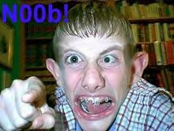

Chat
 De: La Frikipedia, la enciclopedia extremadamente seria.
De: La Frikipedia, la enciclopedia extremadamente seria.
Chat (del latin "mierdus hablatus"): Posiblemente una de las mas grandes cagadas invenciones desde la creación de la Internerd, hoy dia es el medio mas usado por antisociales personas que se comunican mas por Internet, que por telefono o palabras. También es la mejor herramienta para conseguir a tu Stalker personal.
Origen
Un buen día cuando Bill Gates, el hombre que planea controlarnos, terminó de crear el Wuindous se preguntó como hacer que sus esclavos usuarios pudieran comunicarse sin tener que usar la linea telefónica, hasta que finalmente inventó el msn, llenando la Internet de personas adictas a el sexo online diversas formas de comunicación online, a inicios del año 2006 el msn rompió el record de tener mas pajeros usuarios, quien anteriormente y mas adelante, empiezan a surgir distintos tipos de chats, como el IRC, Yahoo MSN y cada cierto tiempo iran surgiendo mas medios por el cual chatear.

ejemplo de dos
gays canis hablando
Tipos de Usuarios
Hay muchos tipos de usuarios de este medio de comunicación sexual online, entre los mas frecuentes tenemos:
- El Común: son los usuarios que por primera vez entran al canal de chat "ya sea de msn o irc", o simplemente entran por que un contacto lo agregó a la sala sin su permiso o con su permiso, y a causa de no tener experiencia, es victima de insultos, bromas, de los otros usuarios del chat. Ejemplo:
CRACK: Alfin aparecio el puto de carlos XD.
Carlos: que es XD?
- El Moderado: son los usuarios que pasan todo el dia esperando a que un usuario entre al canal de chat cuando sabe que todos estan en su trabajo, escuela,
prostíbulo.Ejemplo:
CRACK: Hola hay alguien?.
"siempre termina, enviando el mismo mensaje una y otra vez sabiendo que es el unico ser viviente en esa sala de chat".
- El Gay: es el usuario mas abundante en las salas de chat, esta clase de usuario, son hombres que
se vuelven travestis se hacen pasar por mujeres para jugarle bromas al chat entero, y tambien para ver al primer ingenuo en decir: "hola preciosa, donde vives?" el gay, le responde poniendose una foto de la vecina en tanga una familiar, modelo o amiga: "donde vives tu?", el muy inguenuo dice su pais y ciudad, la cual el gay aprovecha para decir que vive en dicha zona, para despues decirle a la final: "Fail soy hombre vete a la mierda" y dejarle traumas psicológicos (osea, lo vuelve emo).
- El Flooder/Spammer: esta clase de usuarios son famosos por interrumpir conversaciones con sus mensajes repetidos, o publicidad de cualquier web, imagen, video, y los seguirán enviando cuando saben que los usuarios no quieren ver
el porno que envian mensajes perjudicantes, causando discuciones, peleas, insultos a sus familiares y en grandes casos, banneo del usuario.
- El Imitador: son aquellos usuarios que empiezan a ponerse el nick del administrador del chat u otro usuario, y empieza
a hacer de homosexual a perjudicar a todos los usuarios presentes en el chat, no necesariamente un usuario del chat, tambien imitan a personas famosas, personajes de caricaturas "en su mayoria de aninme" videojuegos, seres del gobierno, entre otras personas.
- El que se multiplica: Es uno de los usuario con menos cosas que hacer, que se convierte en una combinacion de el moderado y de el imitador. Muchas veces es el que stalkea a los usuarios.
Este es conocido por estar solo en la sala del chat cuando todos estan ocupados, y comenzar a clonar a la gente que regularmente entra al chat.
Pero esto no es todo, NO SEÑORES!!! Ya que tiene clonado a todo el chat alguno que otro usuario, este malevolo chico comienza a hablar con ellos para sorprender a alguien que se le ocurra entrar a la sala.
Caracteristicas de los usuarios del chat
- Siempre tendrán una personalidad opuesta a la que tienen en su vida normal.
- La mayoria utiliza fotos de personajes famosos y ficticios con la intencion de ocultarle al mundo
que es un gordo su verdadera apariencia.
- Si el usuario muestra su foto real, es por que es un
flogger usuario sin pena a mostrarle su apariencia al mundo.
- La mayoria de los nicks son basados en videojuegos, películas, actores, series de telvisión entre otros, debido a que sus nombres reales son preferiblemente omitidos por dichos usuarios, o por que nos hacen reir.
- Nunca faltará el usuario diciendo: "soy hacker y me quedaré con este xat" y todos asustados, bannean al usuario, le pasan el antivirus a sus maquinas 20 veces, y a la final dicen: "ja! nunca me crei ese cuento de que el era hacker".
- Nunca faltará el usuario cuya ortografía es peor que la de un ciego escribiendo con los pies, omitiendo letras creyendo que hacen su manera de escribir mas original, ejemplo: "hola cmo te va?, T Qiedo, iop?, ptm, HDP (En estos momentos debes de estar diciendo: "que bueno que no hablo asi")
- El 50% de los usuarios son personas rechazadas socialmente, buscando
porno entretenimiento, el 30% son usuarios de trabajo, es decir que usan este medio para hablar de negocios, el 15% son usuarios de promedio normal, y el resto son retardados comunes.
Iconos famosos en los chats
Existen muchos tipos de iconos, pero estos son los mas famosos:
xD: este icono es usado cuando el usuario se rie de alguna broma hecha por otro usuario.
XD: es similar al xD, solo que este es usado cuando el usuario se rie de una equivocación de otro usuario, o de un chiste bien bueno.
._.: este icono es usado cuando uno de los usuarios dice o hace algo que a los demas puede sonar homosexual terriblemente mal.
-.-: este icono es usado por el usuario que es victima de una burla muy cruel.
O_O: este icono usado cuando uno de los usuarios confiesa su zoofilia demuestra tener gustos mas raros que el resto de los integrantes del chat.
=D: este icono expresa felicidad "usado cuando uno de los usuarios, se ganó la loteria, salió vivo de una pelea, logro demostrar que es mejor que el administrador del chat, haber pasado un juego de video entero a pesar que lo mataron 1000 veces, entre otras causas dependiendo del usuario".
=S: este icono expresa frustración, desesperación y desgracia o cuando le dieron desde atras
=P: este icono es usado cuando un usuario demuestra necesidad de sexo tener hambre, o gusto por algo o alguien.
>_<: la mayoria de los usuarios que usan este icono, es por que les sucedío una desgracia, desastre, o por equivocarse.
^^: usado para expresar gratitud, felicidad y homosexualidad demostrarle a los demas que no sabe para que sirve ese icono .
=3: sirve para hacerse el inocente cuando toda la sala de chat sabe que eres mas revoltoso.
=/: este icono es usado para expresar que no te importa los problemas de los demás.
Advertencia!: si tienes la desgracia de usar el chat, y encima si usas al menos 3 de estos iconos eres una persona normal, pero si usas 4 o 5, necesitas un psicólogo urgente, pues los que usan mas de 3 iconos "algunos" tienden a aplicarlos en la vida real.
 Cuando alguien te invite a salir por chat, ten en cuenta que podría ser como él
Léase también
- N00b: En un breve resumen, el chico n00b.
- Emo: Los
putos llorones chicos emocionales.
- Flood: El chico con el proposito de llenar el servidor con informacion.
- Spam: La publicidad
de pr0n en exceso.
- Gay: Personas dadas a gustar de las personas de su mismo sexo.
Autor(es):
- Kevrochi
- Genericool
- Dancob
- ChicaRara
- SMiguelR
- Frikisexigirl!!!
- Joa18121995
- Salazar Slytherin
Frikipedia 2005-2016, Licencia
GFDL 1.2 - Extraído por FrikiLeaks